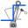
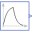

DCPM_TemperatureTest example: Investigate temperature dependency of a DCPM motor |
|
Diagram
{kind=link}
Information
This information is part of the Modelica Standard Library maintained by the Modelica Association.
Test example: Investigate influence of armature temperature on a DCPM motorThe motor starts at no-load speed, then a load step is applied.
Beginning with the load step, the armature temperature rises exponentially from 20 degC to 80 degC.
Simulate for 3 seconds and plot (versus time):
- dcpm.ia: armature current
- dcpm.wMechanical: motor's speed
- dcpm.tauElectrical: motor's torque
- thermalAmbientDCPM.Q_flow_a: motor's armature losses
- The armature winding material is set to Copper.
- Armature reference temperature is set to 80 degC.
- Nominal armature temperature is set to 80 degC.
Parameters (6)
| Va |
Value: 100 Type: Voltage (V) Description: Actual armature voltage |
|---|---|
| Ve |
Value: 100 Type: Voltage (V) Description: Actual excitation voltage |
| w0 |
Value: Modelica.SIunits.Conversions.from_rpm(1500) Type: AngularVelocity (rad/s) Description: No-load speed |
| TLoad |
Value: 63.66 Type: Torque (N·m) Description: Nominal load torque |
| JLoad |
Value: 0.15 Type: Inertia (kg·m²) Description: Load's moment of inertia |
| dcpmData |
Value: Type: DcPermanentMagnetData |
Components (9)
| dcpm |
Type: DC_PermanentMagnet |
|
|---|---|---|
| armatureVoltage |
Type: ConstantVoltage |
|
| groundArmature |
Type: Ground |
|
| loadInertia |
Type: Inertia |
|
|  | loadTorque |
Type: TorqueStep |
| thermalAmbientDCPM |
Type: ThermalAmbientDCPM |
|
|  | exponential |
Type: Exponentials |
| const |
Type: Constant |
|
| dcpmData |
Type: DcPermanentMagnetData |